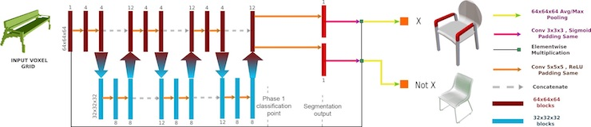
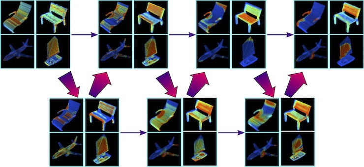

Tags2Parts: Discovering Semantic Regions from Shape Tags
Sanjeev Muralikrishnan, Vladimir G. Kim, and Siddhartha Chaudhuri
Proc. CVPR, 2018 [BibTeX]
Preprint: [PDF] [arXiv]
Code and Data: GitHub
We propose a novel method for discovering shape regions that strongly correlate with user-prescribed tags. For example, given a collection of chairs tagged as either "has armrest" or "lacks armrest", our system correctly highlights the armrest regions as the main distinctive parts between the two chair types. To obtain point-wise predictions from shape-wise tags we develop a novel neural network architecture that is trained with tag classification loss, but is designed to rely on segmentation to predict the tag. Our network is inspired by U-Net, but we replicate shallow U structures several times with new skip connections and pooling layers, and call the resulting architecture "WU-Net". We test our method on segmentation benchmarks and show that even with weak supervision of whole shape tags, our method can infer meaningful semantic regions, without ever observing shape segmentations. Further, once trained, the model can process shapes for which the tag is entirely unknown. As a bonus, our architecture is directly operational under full supervision and performs strongly on standard benchmarks. We validate our method through experiments with many variant architectures and prior baselines, and demonstrate several applications.

